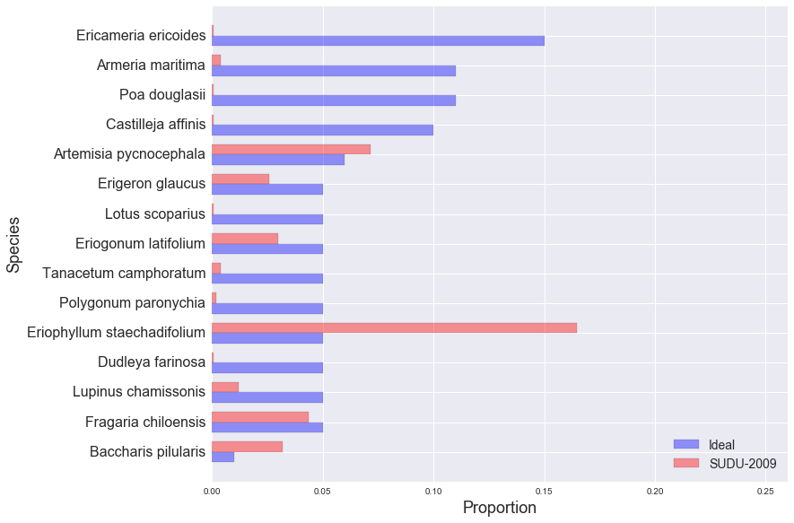

golden gate national parks conservancy: scrub mix
SUDU-2009
EAPO-2011
NMS-2010
NMS-2011
NMS-2012
NUWO-2010
NUWO-2011
NUWO-2012
SUDU-2008
SUDU-2009
SUDU-2010
SUDU-2011
SUDU-2012
Ideal and Observed Scrub Mix, SUDU-2009:
Other Species in SUDU-2009 Sample:
| Species | Observed % |
|---|---|
| Bare ground | 27.78% |
| Bromus diandrus | 5.36% |
| Lupinus arboreus | 4.17% |
| Grindelia hirsutula var. maritima | 2.58% |
| Ehrharta erecta | 2.58% |
| Tarp/Fabric | 2.38% |
| Marah fabaceus | 2.38% |
| Ambrosia chamissonis | 2.18% |
| Achillea millefolium | 1.98% |
| Eschscholzia californica | 1.79% |
| Rubus ursinus | 0.99% |
| Artemisia pycnocephala | 0.79% |
| Rumex salicifolius | 0.79% |
| Unknown grass | 0.60% |
| Equisetum laevigatum | 0.40% |
| Mimulus auranticus | 0.40% |
| Gnaphalium luteo-album | 0.40% |
| Juncus patens | 0.40% |
| Malva neglecta | 0.40% |
| Grindelia hirsutula var. hirsutula | 0.40% |
| Scripus microcarpus | 0.40% |
| Scrophularia californica | 0.40% |
| Thatch/Woody Debris | 0.20% |
| Phacelia californica | 0.20% |
| Raphanus sativus | 0.20% |
| Lavatera arborea | 0.20% |
| Cardionema ramosissimum | 0.20% |
| Grindelia hirsutula | 0.20% |
| Abronia latifolia | 0.20% |
| Albizia lophantha | 0.20% |